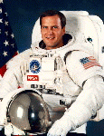

Lyndon B. Johnson Space Center
Houston, Texas 77058
|
National Aeronautics and Space Administration Lyndon B. Johnson Space Center Houston, Texas 77058 |
 |
Biographical Data |
||
Richard J. Hieb (Mr.)
NASA Astronaut (former)
PERSONAL DATA: Born September 21, 1955, in Jamestown, North Dakota. Married to the former Jeannie Hendricks of Norfolk, Virginia. They have two children. He enjoys sports and family outings. His parents, Mr. & Mrs. Fred Hieb, reside in Jamestown, North Dakota. Her mother, Mrs. Jean Hendricks, resides in Norfolk, Virginia. Her father, Mr. John R. Hendricks, is deceased.
EDUCATION: Graduated from Jamestown High School, Jamestown, North Dakota, in 1973; received a bachelor of arts degree in math and physics from Northwest Nazarene College in 1977, and a master of science degree in aerospace engineering from the University of Colorado in 1979.
NASA EXPERIENCE: After graduating from the University of Colorado in 1979, Mr. Hieb came directly to NASA to work in crew procedures development and crew activity planning. He worked in the Mission Control Center on the ascent team for STS-1, and during rendezvous phases on numerous subsequent flights. He has an extensive background in on-orbit procedures development, particularly in rendezvous and proximity operations.
Selected by NASA in June 1985, Mr. Hieb became an astronaut in July 1986, qualified for assignment as a mission specialist on future Space Shuttle flight crews. Since then he has held a variety of technical assignments including launch support activities at Kennedy Space Center, and has served in both the Mission Development Branch and in the Operations Development Branch of the Astronaut Office. He supported the STS-26 mission as a part of the close-out crew prior to launch and as a part of the change-out crew just after landing. A veteran of three space flights, Mr. Hieb flew on STS-39 in 1991, STS-49 in 1992, and STS-65 in 1994. He has logged over 750 hours in space, including over 17 hours of EVA (space walk).
Mr. Hieb first flew on the crew of STS-39, an unclassified Department of Defense mission which launched on April 28, 1991 from the Kennedy Space Center in Florida. During the mission, he was responsible for operating the Infrared Background Signature Satellite (IBSS) from within the payload bay, on the Remote Manipulator System (RMS) and as a free-flying satellite. He also operated the RMS to release the IBSS, and then to retrieve the IBSS a day and a half later. After 134 orbits of the Earth which covered 3.5 million miles and lasted just over 199 hours, the crew landed at Kennedy Space Center, Florida, on May 6, 1991.
Mr. Hieb was also a mission specialist on the crew of STS-49, the maiden voyage of the new Space Shuttle Endeavour, which launched from the Kennedy Space Center, Florida, on May 7, 1992. During that mission, Hieb along with astronaut Pierre Thuot, performed three space walks which resulted in the capture and repair of the stranded Intelsat VI F3 communications satellite. The third space walk, which also included astronaut Tom Akers, was the first ever three-person space walk. This 8 hour and 29 minute space walk, the longest in history, broke a twenty year old record that was held by Apollo 17 astronauts. The mission concluded on May 16, 1992 with a landing at Edwards Air Force Base, California, after orbiting the Earth 141 times in 213 hours and traveling 3.7 million miles.
Mr. Hieb was the payload commander on the second flight of the International Microgravity Laboratory (IML-2) on Space Shuttle Mission STS-65. The mission launched from Kennedy Space Center in Florida on July 8, 1994, and returned there on July 23, 1994, setting a new flight duration record for the Space Shuttle program. During the 15-day flight the crew conducted more than 80 experiments focusing on materials and life sciences research in microgravity. The mission was accomplished in 236 orbits of the Earth, traveling 6.1 million miles.
JANUARY 1995
This is the only version available from NASA. Updates must be sought direct from the above named individual.
{kind=link}